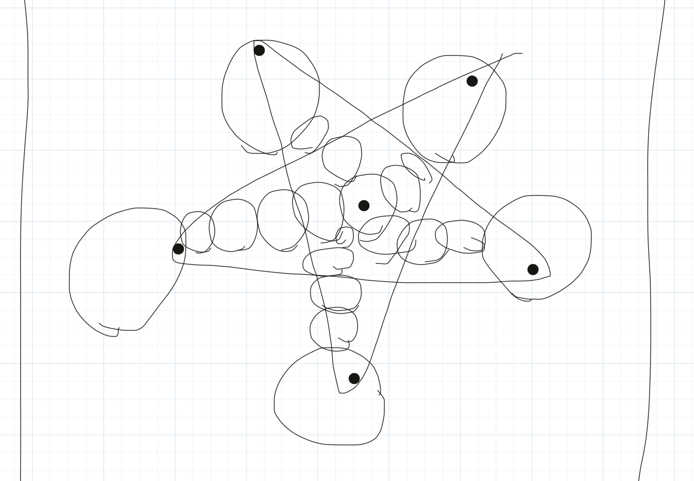
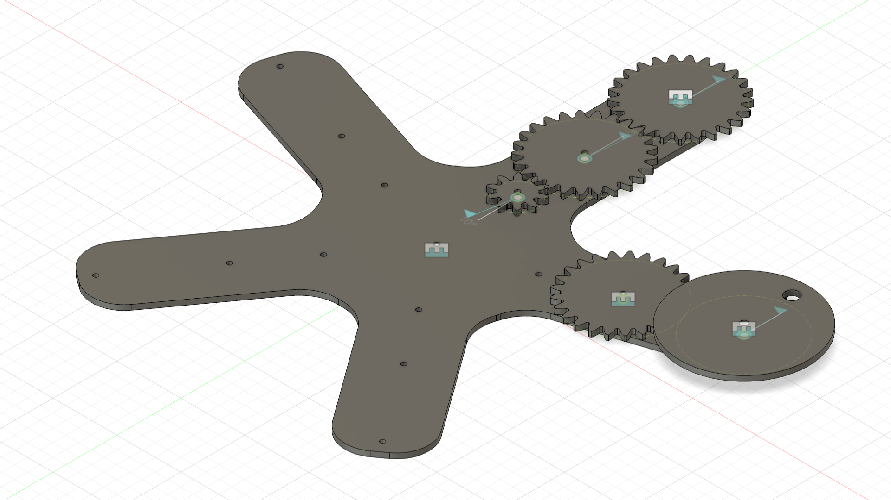
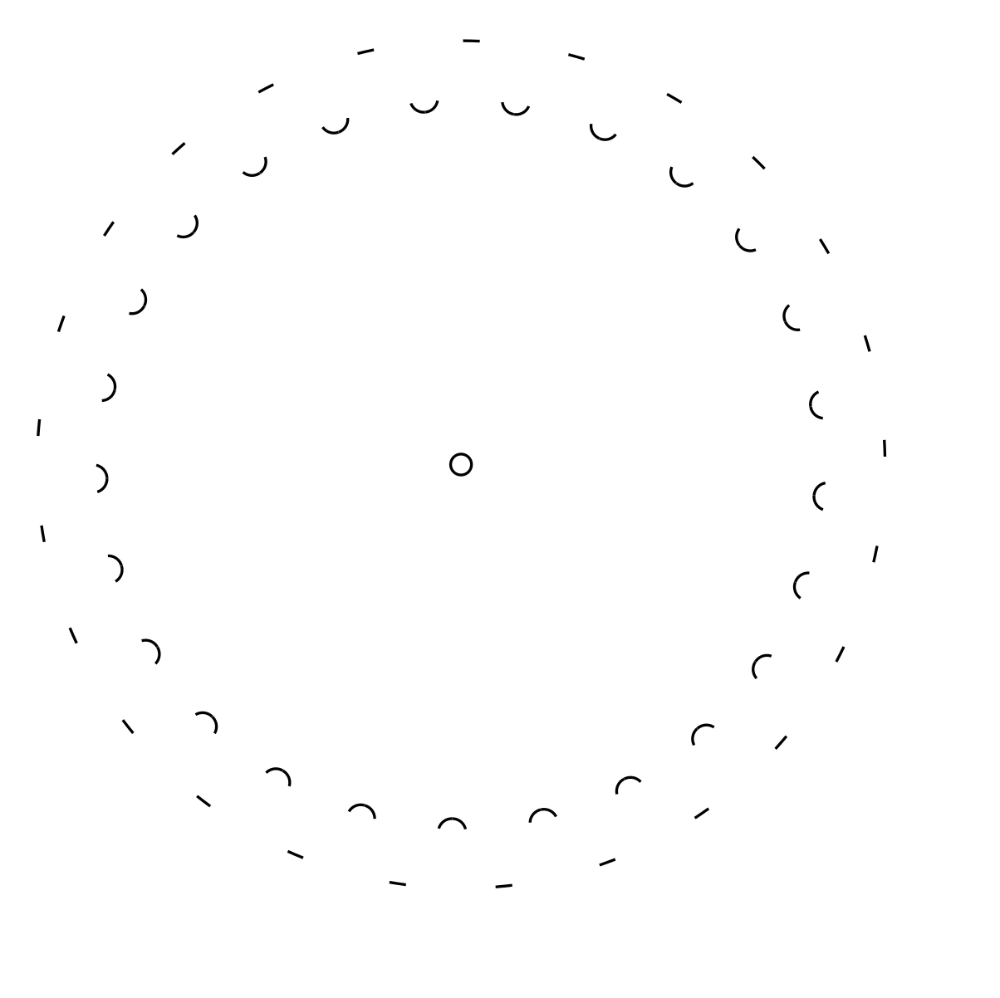
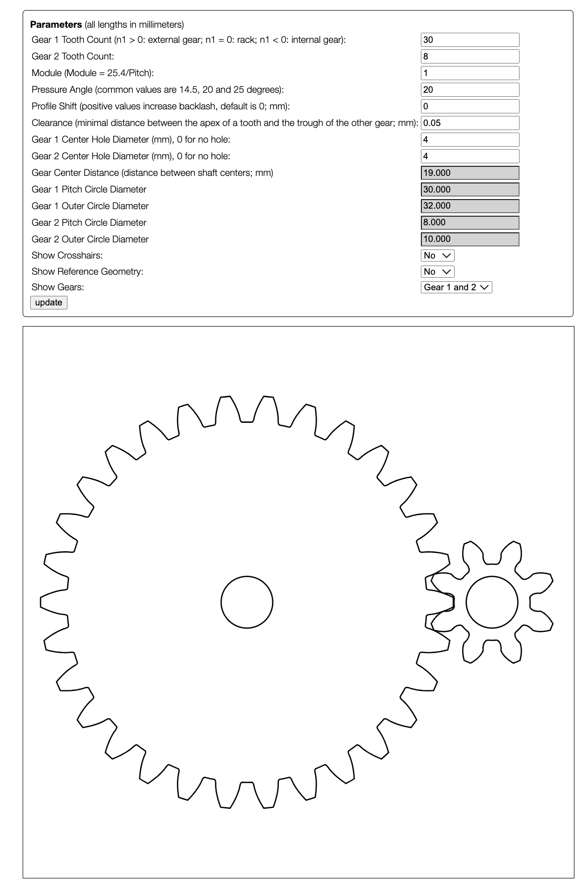
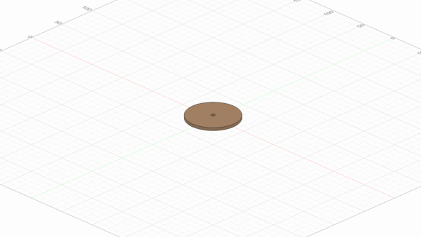
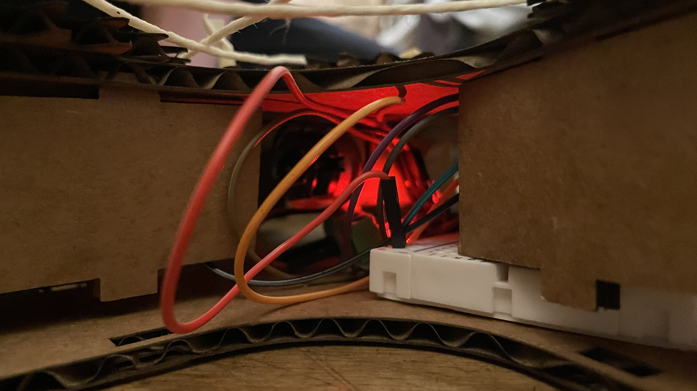

Class 3: Kinematic Sculpture
Inspiration:
I was inspired by this video to create a string kinematic sculpture. To modify the design I decided that the string would make a shape at some point in the movement. I wanted a shape that would be interesting to look at the strings move and something that is simple enough to design. After brainstorming for a bit I decided on a star shape. This was because it would be easy for the strings to create interesting patterns and it would be relatively easy to cad because it has 5 symmetrical points.
Design Process:
Before I started designing I knew that I would mainly be using a laser cutter to fabricate this sculpture. This meant that I would have to figure out how to use thin, almost 2D sheets of material to make the sculpture rather than creating 3 dimensional parts.
Concept Art:
This was my very rough initial concept for the kinematic sculpture. Using this concept I then started CADing the design in fusion 360.
Design 1:
This design's assembly was not fully completed but all the parts are there. To take this 3 Dimensional design and convert it to something readable by the laser cutter there are a few things you have to do.
Steps to take 3D design and convert to laser cutter:
- Project the faces of the objects to a new sketch
- Export those sketches to DXF files
- Organize all the drawings into one big PNG using Ink Scape
Problem:
However, once I did this I ran into a big problem. When importing the DXF files for any of the spur gears made on fusion 360 a lot of the geometry would not show up. 
Solution:
I was not able to find any easy fix for this issue so I used an online spur gear DXF creator. This had the same parameters as the fusion spur-gear-generator so it was pretty easy to translate over. Design 2:
Once I fixed the gear problem I was ready to prototype parts. This is an essential part of the design process and was very helpful for me because it made me realize flaws in my design before I committed to fabricating the entire build.
Prototype Parts:
One of the issues I noticed was that my tolerances for the press fit parts were off. Previously I had built a test for tolerances and figured out the Ideal values for press fit construction with cardboard in this Project. However, I was using a slightly different cardboard this time so most of the values were off.
Final Design:
Model:
Fabrication:

The cut time was over an hour for all the parts. I was originally going to cut out the parts with wood but decided on cardboard to cut down on fabrication time.
Electronics:
More about the electronics here.
Final Build (Did Not work :[ ):

The string is not taught because I could not move the disks at the different ends to figure out how log it had to be.
Reflections:
I ended up using M3 hardware as axels. However I was never able to get the full build to work. This was because the cardboard gears created too much friction and therefore the motor was not able to run the build. The cardboard gears also quickly deteriorated and did not interface well with each other after a short time. I think that if I used wood instead of cardboard to fabricate the parts it would have worked. This is because the wooden parts would fit together better and would not deteriorate.